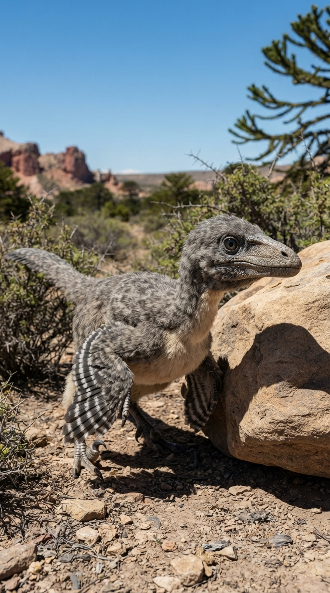
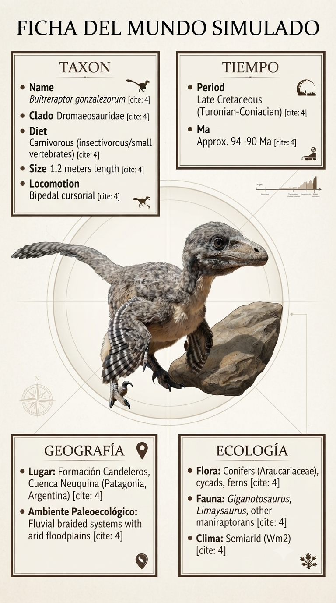
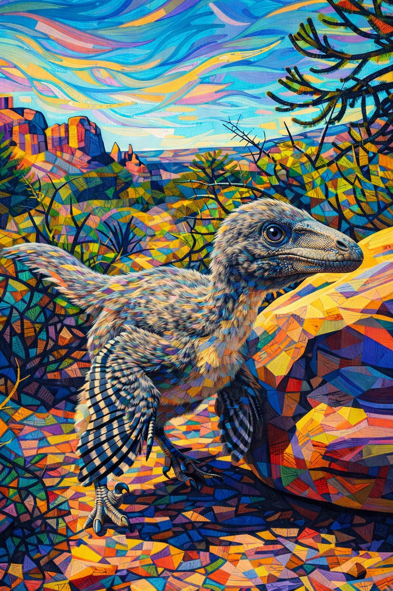

Paleoficha de Buitreraptor



Periodo: Cretácico Superior
Edad: Hace aproximadamente 95 millones de años.
Dieta: Carnívoro especializado en pequeñas presas.
Distribución: Formación Candeleros, Patagonia (Argentina).
TAXÓN:
Buitreraptor gonzalezorum (Dromaeosauridae, Unenlagiinae). Dinosaurio terópodo de constitución ligera, hocico alargado y dientes finos adaptados a la captura de pequeñas presas.
TIEMPO:
Cretácico Superior (Cenomaniense), hace aproximadamente 95 millones de años.
GEOGRAFÍA:
Formación Candeleros, Patagonia (Argentina). Llanuras fluviales y ambientes eólicos situados en el margen continental de Gondwana.
ECOLOGÍA:
Bosques de coníferas tipo araucaria y vegetación de ribera dominaban el paisaje. Compartía el ecosistema con gigantes como Giganotosaurus, saurópodos como Limaysaurus y otros pequeños depredadores. Ocupaba el nicho de cazador ágil de pequeños vertebrados e insectos, desempeñando un papel similar al de las aves depredadoras actuales.
CLIMA:
Wm2 (Semiárido). Clima cálido con marcada estacionalidad de las precipitaciones.
ESTADO ECOLÓGICO:
Estable. Representa un linaje sudamericano muy especializado de dromeosáuridos, caracterizado por su hocico estrecho y una dentición adaptada a capturar presas pequeñas y rápidas.
Vídeo PalEntropía:
▶ Ver Short en YouTube